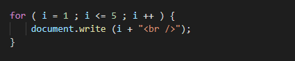
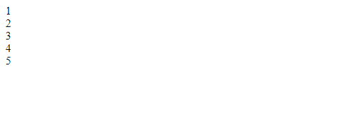

Curso JS - El bucle for
El siguiente ejemplo crea un bucle for que imprime los números del 1 al 5.

En este ejemplo, la declaración 1 establece una variable antes de que comience el ciclo ( var i =
1).
La declaración 2 define la condición para que se ejecute el ciclo (i debe ser menor o igual que 5).
La declaración 3 aumenta un valor (i ++) cada vez que se ejecuta el bloque de código en el bucle.

La declaración 1 es opcional y se puede omitir si sus valores se establecen antes de que comience el ciclo.

Además, puede iniciar más de un valor en la declaración 1 , utilizando comas para separarlos.
Si la declaración 2 devuelve verdadero, el ciclo comenzará de nuevo, si devuelve falso, el ciclo terminará. La declaración 2 también es opcional.
Si omite la declaración 2, debe proporcionar un break dentro del ciclo. De lo contrario, el ciclo nunca terminará.
La declaración 3 se usa para cambiar la variable inicial . Puede hacer cualquier cosa, incluido
incremento negativo (i--), incremento positivo (i = i + 15) o cualquier otra cosa.
La declaración 3 también es opcional y se puede omitir si incrementa sus valores dentro del ciclo.
Puede tener varios bucles for anidados.